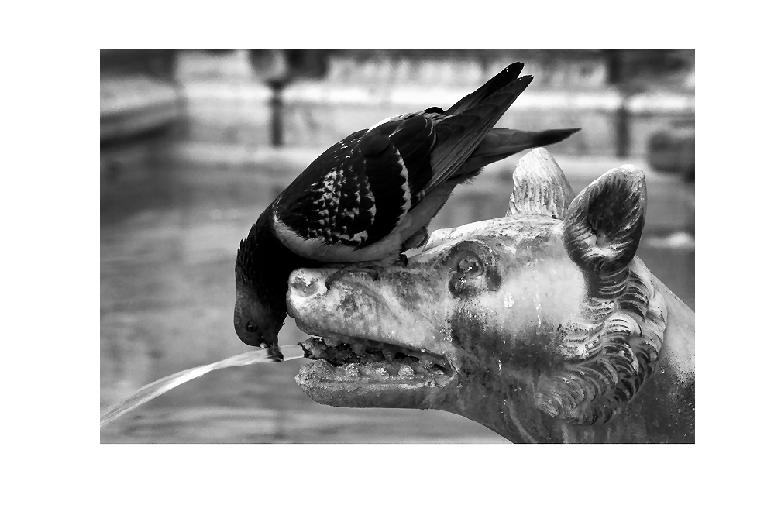
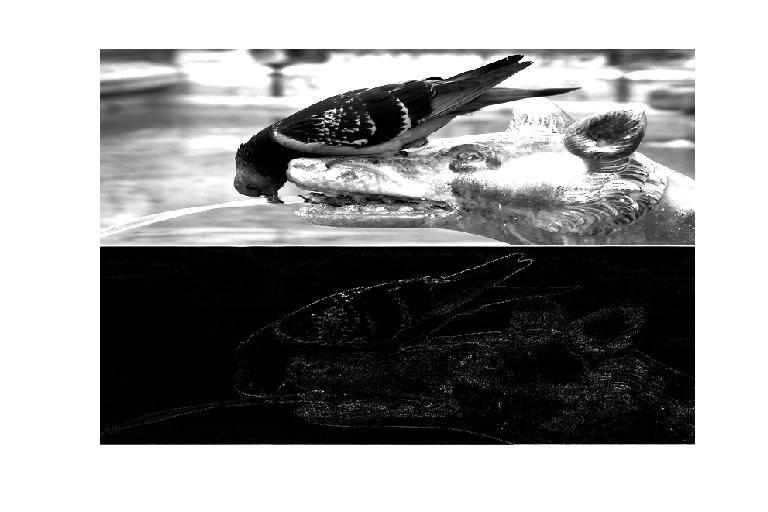

| DiscreteWavelets Toolbox |
The computation WA, where W is an orthogonal wavelet matrix
B = LeftWT(A,h)
B = LeftWT(A,h) returns the produce WA where W is an orthogonal wavelet matrix constructed from filter h.
The dimensions of A must be even integers. The orthogonal filter h must be of even length.
Here we compute WA for a grayscale image.
gry=ImageNames('ImageType','GrayScale'); %Get file names of grayscale images included with the package
A=ImageRead(gry{11}); %Read one of the images.
ImagePlot(A) %Plot the image
The result is

Now apply LeftWT and plot the result.
B=LeftWT(A,Daub(4)); %Compute WA ImagePlot(B,'LinearScaling','LeftWT') %Plot the image

LeftIWT, RightWT, WT2D1, WaveletDensityPlot
© 2007-2008 Patrick Van Fleet